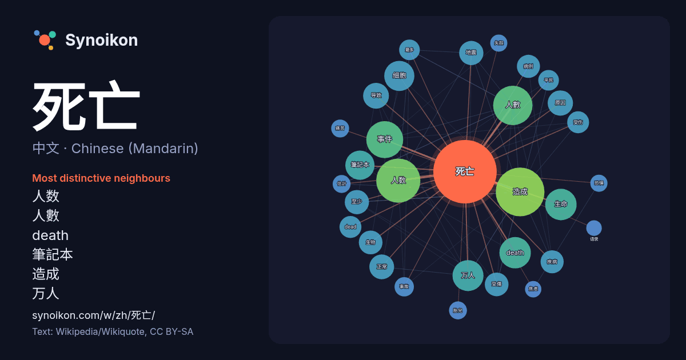

中文 · Chinese (Mandarin) · popular word
死亡
“death” · The words found around it in 1642 instances from Chinese (Mandarin) Wikipedia, Wikiquote.

Most distinctive neighbours
- 人数 52×
- 人數 38×
- death 36×
- 筆記本 31×
- 造成 27×
- 万人 25×
- 细胞 22×
- 生命 21×
- dead 18×
- 病例 17×
- 受傷 16×
- 事件 15×
- 受伤 15×
- 正常 15×
- 地震 15×
- 疾病 14×
- 至少 13×
- 平民 13×
- 胎兒 12×
- 导致 12×
× = how many times more often than in general Chinese (Mandarin) Wikipedia text.
Most frequent neighbours
- 造成 89
- 人数 73
- 人數 58
- 事件 51
- death 37
- 生命 37
- 万人 36
- 细胞 34
- 筆記本 32
- 包括 29
- 导致 25
- 原因 24
- 正常 23
- 電影 23
- 地震 22
- 至少 22
- 受傷 21
- 可能 21
- 生物 21
- 疾病 20
In context
- 死亡為生命的終止，即所有维持生物存活的生物機能全數不可逆的停擺。所有生物終將死亡，生物体的遗骸通常死后不久就开始分解。死亡通常用于描述整个生物体，生物的单个部分（如细胞和组织）对应的术语應為坏死。事物不再活跃亦可比喻作“死亡”，如恒星耗尽燃料。 除了燈塔水母、海绵、海鞘等極少數個例得以實現生物意義上 Wikipedia snippets · 死亡
- 《死亡筆記本》（日語：DEATH NOTE／デスノート，羅馬化：Desu Nōto，簡稱《DN》）是由大場鶇原作，小畑健作畫的日本懸疑少年漫畫。故事敘述天才高中生夜神月取得了一本允許任何人只要透過知道對方的姓名及長相，就能夠殺死對方的死亡筆記本，他企圖以筆記本殺死罪犯來創造沒有犯罪者、只有善良和努力 Wikipedia snippets · 死亡笔记
- 《死亡擱淺》（日語：デス・ストランディング）是一款由小岛工作室開發，索尼互動娛樂發行的開放世界動作冒險遊戲。本作是著名遊戲制作人小島秀夫自科樂美獨立之後發表的首部遊戲作品，遊戲以“連結”為主題，玩家需要在已经荒蕪的美国（遊戲中的全名為「美利堅聯眾國」United Cities of Wikipedia snippets · 死亡擱淺
- 《死亡賭局》（Dead End）是一部2026年上映的台灣電影，由詹淳皓執導，詹淳皓、蔡岳霖編劇，主演包括洪瑜鴻（玖壹壹 春風）、姚以緹、黃奇斌與丁寧等人。 落魄的前職棒投手林勝毅（洪瑜鴻-春風飾），因假球案人生跌落谷底。某個夜晚返鄉，他打算透過收地計畫大撈一筆，重新翻身，卻發現整個小鎮瀰漫著說不出口的詭異氣氛。 Wikipedia snippets · 死亡賭局
- 藍可兒死亡事件指的是加拿大籍華人藍可兒（或称林可儿，英語：Elisa Lam；1991年4月30日－2013年2月）於2013年1月至2月間在美國加利福尼亚州洛杉磯市中心塞西尔酒店屋頂水塔內的溺死事件。因其死亡地点離奇，加上其失踪前被監視器拍摄到在酒店电梯内作出一系列古怪动作，因此成为关注焦点。洛杉 Wikipedia snippets · 藍可兒死亡事件
- 《死亡遊行》（日語：デス・パレード）是在「動畫未來 2013（日語：アニメミライ2013）」中展出作品《死亡撞球》（日語：デス・ビリヤード）的續作電視動畫。《死亡遊行》於2015年1月播映。 《死亡遊行》以聚集人類靈魂的不可思議酒吧「奎因‧德基姆」為舞台。某天，兩名還不知道發生何事的客人來到酒吧，迎 Wikipedia snippets · 死亡遊行
- 维基语录上的死亡诗社语录 開眼電影網上《春風化雨》的資料（繁體中文） 豆瓣电影上《死亡诗社》的資料 （简体中文） 时光网上《死亡诗社》的資料（简体中文） AllMovie上《死亡诗社》的资料（英文） 爛番茄上《死亡诗社》的資料（英文） Box Office Mojo上《死亡诗社》的資料（英文） Wikipedia snippets · 死亡诗社
- 全会后的中央政治局扩大会议上，披露文革相关数据，可得出文革非正常死亡342万人、55.7万人失踪。 依据美国政治学教授鲁道夫·拉梅尔于1991年所著的《一百年血淋淋的中国》，文革期间的非正常死亡人数约为773万1千人，即每1万人口里死亡96人。 依据作家张戎和爱尔兰历史学家乔·哈利戴于2005年所著 Wikipedia snippets · 文化大革命
More Chinese (Mandarin) words
Precomputed on 2026-10-09 with default settings (±5 words, medium corpus). The interactive map can refresh it with live data.